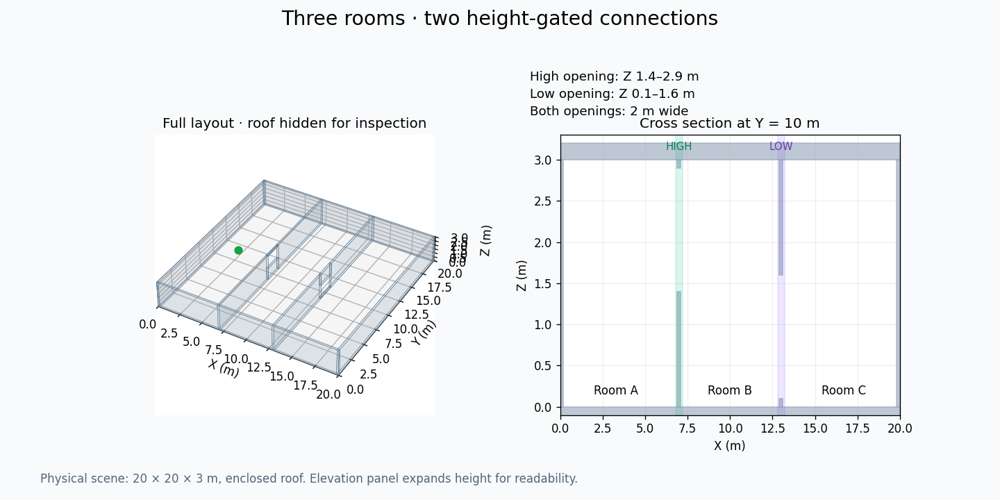

Three rooms. Two height-gated connections.
3D-ARiADNE map review · 20 × 20 × 3 m · old lattice model_499 · no retraining
Map geometry
The first connection requires a higher flight path; the second requires a lower one. The physical scene has a roof. Figures hide the roof for inspection; the right-hand elevation view expands height for readability.

| Parameter | Review map |
|---|
| High opening | Z 1.4–2.9 m |
| Low opening | Z 0.1–1.6 m |
| Opening width | 2 m each |
| Existing lattice layers | Z 1 m and Z 2 m |
| Controller hard obstacle radius | 0.4 m, unchanged |
With a 0.25 m geometric margin, a connected 3D route exists and no constant-height route crosses both gates. This is a geometric check, not a complete flight-safety certificate.
Measured replay
The old learned policy stopped in Room A. Its planner stop signal must not be interpreted as complete exploration of this new map.
 Download this GIF
Download this GIF
What changed
Added fixed 3D boxes, including suspended lintels, sills, roof and floor. The original 32 maps, trained weights, PPO settings and controller costs were retained. The initial tighter-opening experiment is preserved above; the revised geometry increases clearance for the existing lattice layers.
Gray geometry is full-layout context. Blue points are actual observations. Orange is the measured trajectory. The elevation plot projects the path onto X–Z even when the robot is away from the opening centerline. Rotor contact sensor readings are not a complete collision check.
Download map geometry JSON · Download measured summary · 32-map baseline gallery